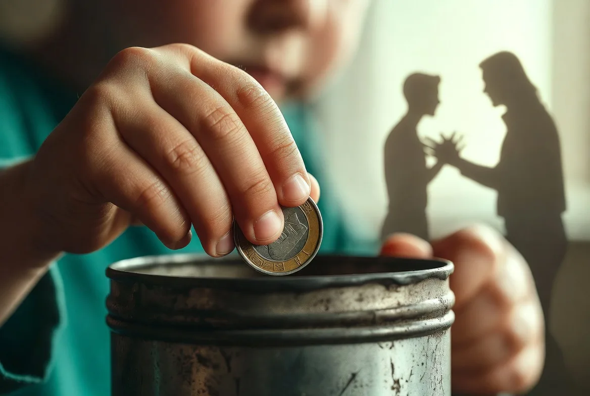
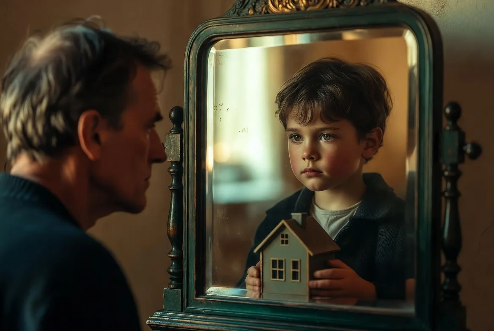
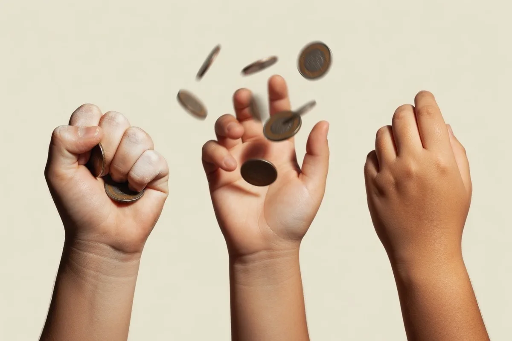

Ко мне приходят клиенты с очень разными запросами: одна женщина не может попросить повышения зарплаты, хотя знает, что заслуживает его. Мужчина успешно строит бизнес, но каждый раз, когда счёт приближается к определённой сумме, он каким-то образом её «теряет». На первый взгляд — две разные истории. На самом деле у них одна общая черта: их поведение с деньгами управляется сценариями, написанными в детстве.
95% финансовых решений взрослого человека продиктованы убеждениями, усвоенными до 7 лет
— и большинство из них никогда не подвергались сомнению
Что такое денежный сценарий и как он формируется
Термин «денежный сценарий» (money script) ввёл американский психолог Брэд Клонц, изучавший финансовое поведение с позиций психологии. Но механизм, который за ним стоит, описывал ещё Эрик Берн в транзактном анализе — он называл это жизненными сценариями, усваиваемыми в детстве через послания родителей: прямые («деньги — это грязь») и косвенные (папа вздыхает каждый раз, когда видит чек в магазине).
Ребёнок не анализирует эти послания. Он просто впитывает их как истину — потому что родители в детском восприятии и есть весь мир. Мозг до 7–8 лет работает преимущественно в тета-ритме: состояние, похожее на лёгкий гипноз, при котором любая информация записывается без критического фильтра.
Почему это так устойчиво? Детские убеждения хранятся в имплицитной памяти — той же, что управляет вождением автомобиля. Вы не «вспоминаете» их осознанно, они просто действуют: через ощущения, импульсы, автоматические реакции.
Передача денежных сценариев происходит по нескольким каналам одновременно:
- Прямые высказывания: «Деньги не растут на деревьях», «Богатые люди нечестные», «Нам на жизнь хватает — и ладно»
- Модели поведения: как родители спорили из-за денег, как принимали решения о покупках, прятали ли деньги «на чёрный день»
- Эмоциональный климат: тревога при разговорах о деньгах, стыд, секретность («это не твоего ума дело»)
- Семейные истории: «дед потерял всё в кризис», «мы никогда не были богатыми», «у нас в роду все скромно жили»
- Значимые события детства: бедность, резкие перемены финансового положения семьи, поколение родителей, переживших дефицит
Деньги — это не экономическая категория. Это эмоционально заряженный символ, значение которого каждый человек усваивает в своей семье. Для одного деньги — это безопасность. Для другого — угроза. Для третьего — любовь, которую можно купить или потерять.
— из практики работы с финансовой тревогой

Шесть базовых денежных сценариев
В своей практике я вижу шесть устойчивых паттернов. Большинство людей узнают себя в одном-двух из них — а иногда в нескольких одновременно, что делает картину особенно запутанной.
Знание своего сценария — это ещё не его изменение. Многие клиенты говорят: «Я понимаю, откуда это у меня, но всё равно так делаю». Понимание — первый шаг, но для устойчивых изменений нужна работа с поведенческим уровнем и эмоциональной памятью.

Семейные «запреты» на деньги: вклад Вильгельма Райха
Вильгельм Райх ввёл понятие «мышечного панциря» — хронического телесного напряжения как способа подавлять неприемлемые импульсы и чувства. Этот же механизм работает с деньгами, только «панцирь» здесь — психологический: система запретов, которые мы носим внутри, не осознавая их.
В семьях с дисфункциональными денежными паттернами формируются так называемые инъюнкции — бессознательные родительские послания-запреты:
| Инъюнкция | Как звучит в голове | Как проявляется в жизни |
|---|---|---|
| Не будь успешным | «Кто я такой, чтобы много зарабатывать?» | Саботаж карьеры, отказ от повышений, работа ниже своего уровня |
| Не хоти | «Мне многого не нужно, мне хватит» | Занижение потребностей, вина при желании большего |
| Не будь важным | «Неловко называть высокую цену за свою работу» | Постоянный демпинг, работа почти бесплатно |
| Не доверяй | «Везде обманывают, лучше никуда не вкладывать» | Паралич принятия финансовых решений, хранение денег «под матрасом» |
| Не чувствуй | «О деньгах говорить неприлично, главное — не думать» | Избегание финансовой темы, импульсивные траты «лишь бы не думать» |
| Будь лучшим или никем | «Или богатый, или нищий — середины нет» | Финансовые качели: «сорить» деньгами на взлёте и полный ноль в яме |
Интеграция подходов. В своей работе я сочетаю КПТ для работы с убеждениями и поведением, ДПДГ для переработки конкретных болезненных воспоминаний из детства и телесные техники — для работы с теми зажимами, которые Райх называл панцирем.

Как распознать свой сценарий
Прежде чем работать со сценарием, его нужно увидеть. Предлагаю вам несколько вопросов — отвечайте быстро, не обдумывая, доверяйте первой реакции:
Обратите особое внимание на телесные реакции при ответах — напряжение, учащение дыхания, комок в горле, желание уйти от вопроса. Тело часто честнее ума. Там, где реакция сильная — там и живёт сценарий.
Четыре КПТ-техники для работы со сценарием
Когнитивно-поведенческая терапия — метод с доказанной эффективностью для работы с автоматическими убеждениями. Следующие упражнения я использую в работе с клиентами на начальных этапах.
«Денежный дневник убеждений»
Цель: зафиксировать автоматические мысли в финансовых ситуациях и увидеть паттерн.
- Каждый раз, когда возникает финансовая ситуация — остановитесь и запишите: ситуация → мысль → эмоция → реакция тела.
- Например: «Попросили назвать цену → 'я не стою столько' → стыд → сжатие в груди → назвала в два раза меньше».
- Через неделю перечитайте записи. Какая мысль повторяется чаще всего? Это и есть ваше ключевое убеждение.
- Задайте убеждению вопрос: «Откуда я это знаю? Кто мне это сказал?»
«Суд над убеждением»
Классическая КПТ-техника проверки когнитивных искажений.
- Возьмите одно ключевое убеждение, например: «Я не заслуживаю хорошего заработка».
- Запишите все доказательства ЗА это убеждение — максимально честно.
- Запишите все доказательства ПРОТИВ — вспомните факты, когда вы получили то, что заслуживали.
- Задайте себе вопрос: «Если бы мой лучший друг думал о себе то же самое — что бы я ему сказал?»
- Сформулируйте альтернативное, более сбалансированное убеждение.
«Письмо ребёнку, который усвоил этот сценарий»
Техника интеграции опыта — помогает «отделить» детское убеждение от взрослого «я».
- Вспомните себя в 6–8 лет. Где вы живёте? Кто рядом?
- Представьте сцену, где вы впервые услышали или почувствовали что-то важное о деньгах.
- Напишите письмо этому ребёнку — от себя нынешнего. Скажите ему то, чего не сказали взрослые тогда.
- Прочитайте письмо вслух. Обратите внимание на то, что вы чувствуете в теле.
Это упражнение может поднять сильные эмоции. Если почувствуете захлёстывающую грусть, злость или тревогу — не продолжайте в одиночку.
«Поведенческий эксперимент»
КПТ-техника проверки убеждений действием. Самая мощная.
- Сформулируйте убеждение как гипотезу: «Если я назову реальную цену, все уйдут».
- Продумайте небольшой, безопасный эксперимент: назовите реальную цену одному клиенту.
- Запишите свой прогноз: что именно произойдёт?
- Проведите эксперимент. Запишите, что произошло в реальности.
- Сравните прогноз и реальность. Чаще всего катастрофа не происходит.
Как меняется сценарий: реалистичные ожидания
Один из самых частых вопросов: «Сколько нужно времени, чтобы изменить свои убеждения о деньгах?» Честный ответ неоднозначен.
Важный нюанс про поколенческую передачу. Если страх бедности или дисфункциональные паттерны передавались в вашей семье через поколения — через травму войны, репрессий, коллективизации, дефицита — это не ваша личная слабость. Это трансгенерационная передача травмы. Такая работа требует времени, но она возможна — и она освобождает не только вас, но и тех, кто придёт после.
Когда нужен специалист, а не только упражнения
Самостоятельная работа со сценариями — это ценно и важно. Но есть признаки, которые говорят о том, что процесс застрял и нужна профессиональная поддержка:
- Вы понимаете сценарий умом, но поведение не меняется уже несколько месяцев
- При работе с темой денег поднимается очень сильный стыд, страх или ярость
- Финансовые проблемы серьёзно влияют на отношения, здоровье или работу
- Вы замечаете компульсивные паттерны — не можете остановить трату денег или патологически копите
- Тема денег связана с конкретными болезненными воспоминаниями из детства
- Вы чувствуете, что деньги «утекают сквозь пальцы» несмотря на хороший доход
В работе с финансовой психологией я использую КПТ для работы с убеждениями и поведением, ДПДГ для переработки конкретных болезненных воспоминаний и телесные техники — для работы с теми зажимами, которые Райх называл панцирем.
Хотите разобраться со своими денежными сценариями?
Запишитесь на бесплатную 15-минутную консультацию — обсудим ваш запрос и выберем подходящий формат работы
Записаться в Telegram → Отвечаю в течение нескольких часов · Без обязательств